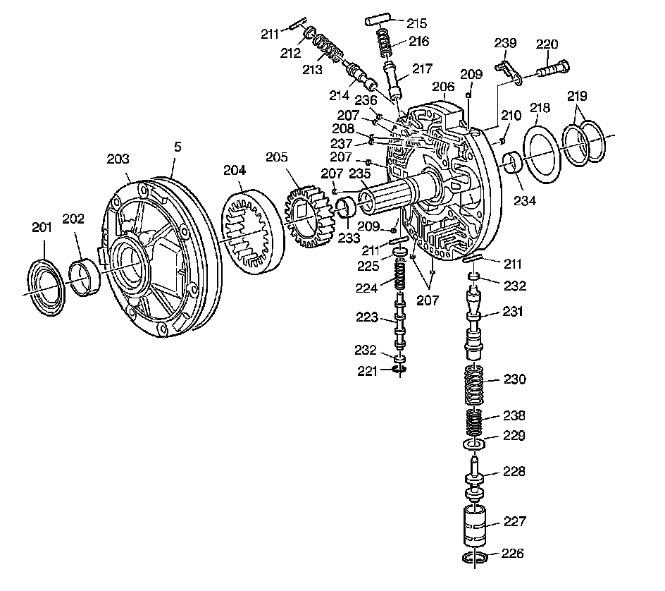

Oil Pump Assembly
Disassembled Views
Oil Pump Assembly:

5 - A/Trans Oil Pump Seal
201 - Torque Converter Oil Seal Assembly
202 - Torque Converter Bushing
203 - Oil Pump Body Assembly
204 - Oil Pump Driven Gear
205 - Oil Pump Drive Gear
206 - Oil Pump Cover
207 - Oil Pump Cover Plug
207 - Oil Pump Cover Plug
207 - Oil Pump Cover Plug
207 - Oil Pump Cover Plug
208 - Converter Limit Valve Bypass Orificed Cup Plug
209 - Oil Pump Cover Plug
209 - Oil Pump Cover Plug
210 - Line Air Bleed Orificed Cup Plug
211 - Pressure Regulator Valve Bore Plug Pin
211 - Pressure Regulator Valve Bore Plug Pin
211 - Pressure Regulator Valve Bore Plug Pin
212 - Converter Regulator Valve Bore Plug
213 - Converter Regulator Valve Spring
214 - Converter Regulator Valve
215 - TCC Enable Valve Spring Retainer Sleeve
216 - TCC Enable Valve Spring
217 - TCC Enable Valve
218 - Overrun Clutch Housing Thrust Washer
219 - Overrun Clutch Housing Oil Seal Ring
220 - Oil Pump Cover Bolt
221 - TCC Shift Valve Bore Plug Retainer Ring
223 - TCC Shift Valve
224 - TCC Shift Valve Spring
225 - TCC Shift Valve Spring Seat
226 - Retainer Ring (Reverse Boost Valve Bushing)
227 - Reverse Boost Valve Bushing
228 - Reverse Boost Valve
229 - Pressure Regulator Valve Spring Retainer
230 - Pressure Regulator Valve Outer Spring
231 - Pressure Regulator Valve
232 - TCC Shift Valve Lower and Pressure Regulator Valve Bore Plug
232 - TCC Shift Valve Lower and Pressure Regulator Valve Bore Plug
233 - Turbine Shaft Front Bushing
234 - Turbine Shaft Rear Bushing
235 - Stator Shaft
236 - Pressure Regulator Valve Feedback Orificed Cup Plug
237 - Converter Limit Valve Feedback Orificed Cup Plug
238 - Pressure Regulator Valve Inner Spring
239 - Vent Passage Splash Shield